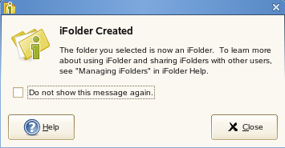
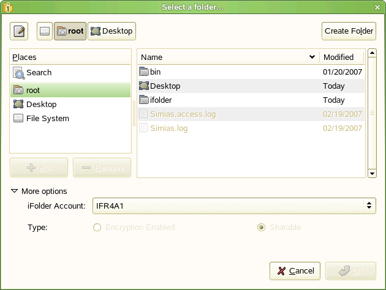

3.5 Creating and Uploading an iFolder
You can create an iFolder by converting an existing folder that satisfies the following guidelines:
If the folder does not exist, you can browse to a location and create the new folder as part of the process.
Within the iFolder, you can set up any subdirectory structure that suits your personal or corporate work habits. The subdirectory structure is constant across all member iFolders. Each workstation can specify a different parent directory for the shared iFolder.
You can create iFolders with a file manager or with the iFolder browser, which is available in the client application. Use the following methods to create an iFolder:
3.5.1 Creating iFolders in a File Manager
-
Use the file manager to navigate to the folder you want to convert to an iFolder, then select the folder.
-
Use one of the following methods:
- Right-click the folder icon, then click
- In the toolbar, click .
The folder icon
 changes
to a folder with an overlay of the iFolder emblem (green “i”) .
changes
to a folder with an overlay of the iFolder emblem (green “i”) . -
If the iFolder Created message appears, do one of the following:
- Click to dismiss the message.
- Select to
disable future notifications, then click to
dismiss the message.

If you later decide that you want to get confirmation messages, go to iFolder Preferences, select , then click .
3.5.2 Creating iFolders in the iFolders Browser
-
In the Notification area, use one of the following methods to open the iFolder browser:
- Click the iFolder Services icon
 .
. - Right-click the iFolder Services icon ,
then click .
- Click the iFolder Services icon
-
Click .
 -
Under , specify the you want to use for this iFolder.
If you have multiple iFolder accounts, the default account is listed first. Use the drop-down list to select a different account.
-
In the browser, navigate to the directory where you want to create an iFolder.
-
Select the normal folder you want to make an iFolder, using one of these methods:
- If the normal folder exists, select the folder, then click .
- If the normal folder does not exist, click to create it, select the newly created folder, then click .
-
Select the iFolder from the given options.You can decide whether to create encrypted iFolders or it to be shared with other users.
IMPORTANT:You are permitted to create encrypted iFolders only if your iFolder Admin has set your encryption policy to . If not, you can create only Shared iFolders, and this option by default is selected. In this case, both the options for are disabled.
- Select to enable encryption for the selected iFolder.
- Select to enable sharing
for the selected iFolder.
iFolder announces the availability of shared iFolders with a balloon pop-up message in the Notification area. Shared users can click the balloon to set up the iFolder at that time, or close the balloon to download the iFolder later.
-
Click .
The iFolder appears in the list.
If you have not set the passphrase during the login session, and when you select the type Encrypted, it prompts you to enter the passphrase.
-
If the iFolder Created message appears, do one of the following:
- Click to dismiss the message.
- Select to
disable future notifications, then click to
dismiss the message.
If you later decide that you want to get confirmation messages, go to , select , then click .
3.5.3 Creating iFolders on a FAT32 Mount Point (Linux)
On Linux, iFolder supports creating and using iFolders on a mount point for a FAT32 file system. Before you can create new iFolders or set up shared iFolders on a FAT32 volume on your Linux computer, the iFolder user must own the FAT32 mount point where you want to store the iFolders, and the /etc/fstab file must explicitly identify the iFolder user’s local user ID for the mount point.
IMPORTANT:This is required because FAT32 does not support file permissions. Any other file system that does not support permissions has the same issue.
For dual boot systems, you can access the data in iFolders as normal folders from the system where the folder is not set up as an iFolder. If you set up the folder as an iFolder on both platforms, the data set is stored in two different iFolders on the server, which consumes double your allocated server disk resources.
Because the FAT32 file system does not support POSIX file system permissions, make sure the iFolder user is the local owner of the mount point. Modify the /etc/fstab file to set the user ID (UID) parameter of the user’s local login identity to the iFolder user who creates iFolders on that mount point.
-
Log in to your computer as the root user.
-
Create the directory where you want to mount the FAT32 file system. At a command prompt, enter
mkdir /home/username/fsmount
Replace username with the username of the user who plans to use the FAT32 drive for iFolders. Replace fsmount with the directory name you want to use as the mount point. For example, if the username is jsmith and the directory name is fat32mntpt for a FAT32 drive or partition, enter
mkdir /home/jsmith/fat32mntpt
-
Mount the FAT32 drive at the desired mount point. At a command prompt, enter
mount -t vfat /dev/hda1 /home/username/fsmount
Replace /dev/hda1 with the device or partition name of the non-Linux device. Replace username with the username of the iFolder user. Replace fsmount with the directory name you want to use as the mount point.
Continuing the example, where the FAT32 file system (vfat) is on the hda4 device (/dev/hda4), the username is jsmith, and the mount point directory is /home/jsmith/fat32mntpt, enter
mount -t vfat /dev/hda4 /home/jsmith/fat32mntpt
-
Edit the /etc/fstab file by adding the uid=username parameter of the iFolder user on the line that defines the FAT32 mount point.
/dev/hda1 /home/username/fsmount vfat uid=username
Continuing the example, modify /etc/fstab file by adding uid=jsmith to the mount point:
/dev/hda4 /home/jsmith/fat32mntpt vfat uid=jsmith